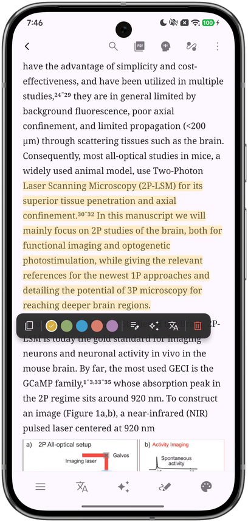
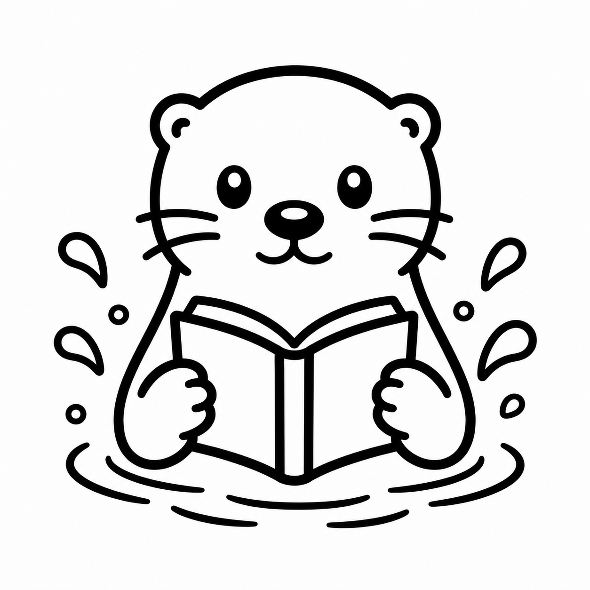

基于 PaddleOCR 版面分析，把排版复杂的 PDF 转为智能排版格式——配合 AI 问答、段落翻译、图表提取，沉浸阅读论文。



从文献导入到深度理解，OtterPad 覆盖学术阅读的完整工作流。
自定义主题配色、字号排版，支持高亮与标注。扫描 PDF 经版面分析后智能重排，在手机上也能舒适阅读。
基于提取的完整文本与图表，AI 回答关于文档的任何问题。支持 OpenAI / Anthropic / Google 等多模型自由切换。
8 并发逐段翻译，自动保护公式、代码、引用编号。双语对照，离线缓存，术语不丢。
精准识别 PDF 中的 figure 和 table，支持独立查看、缩放和复制，不再为看清一张小图费劲。
通过 DOI / PubMed / Crossref / Semantic Scholar 等检索文献，AI 智能重命名，自定义分类标签。
S3 / WebDAV 云端备份与恢复，Zotero 双向同步文献库，可配置定时自动备份。数据安全有保障。
基于 Flutter 构建，跨平台一套代码。所有源码在 GitHub 公开。